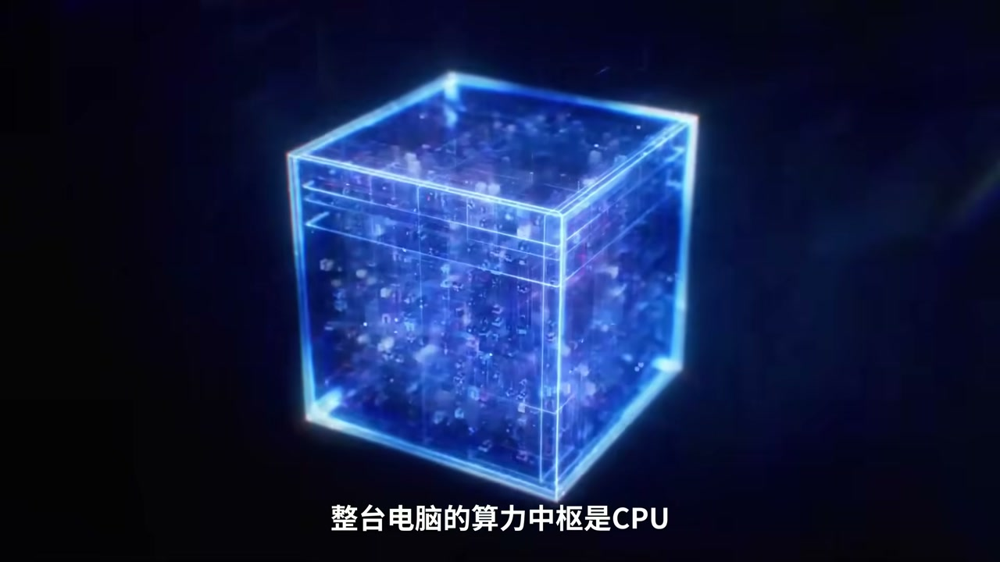
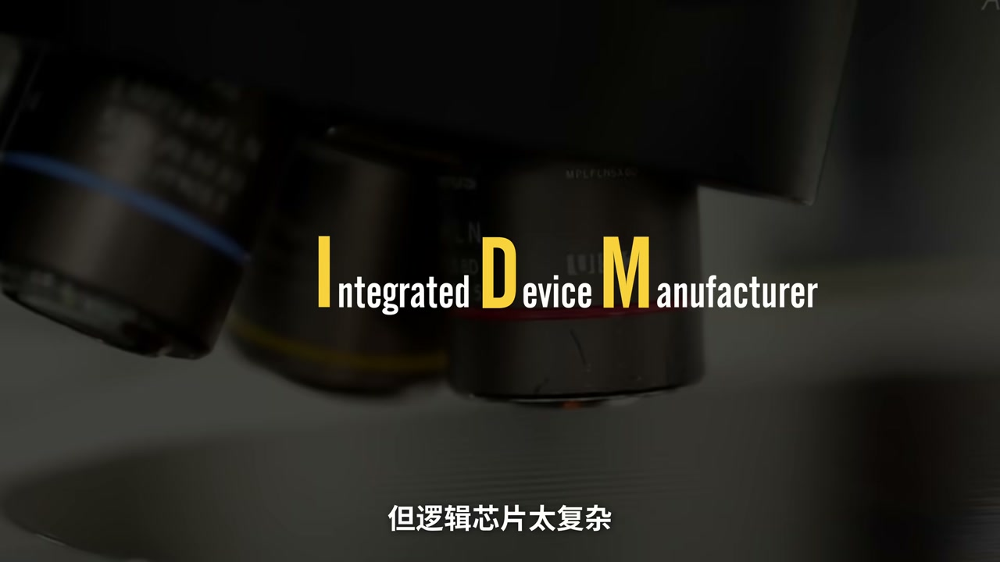
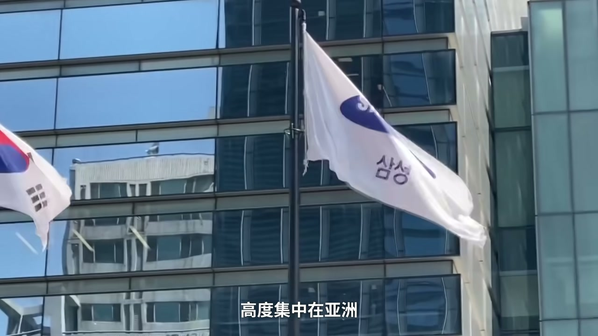
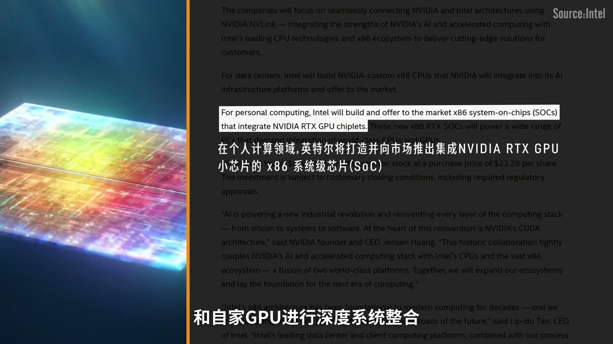
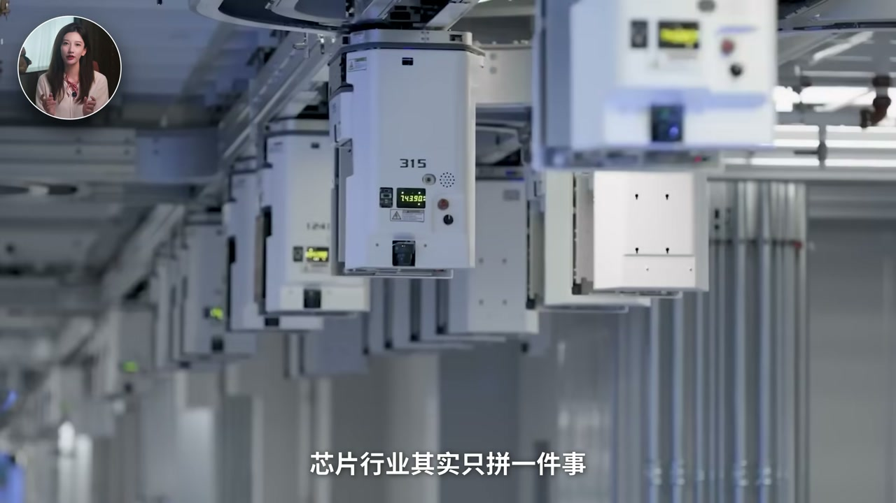
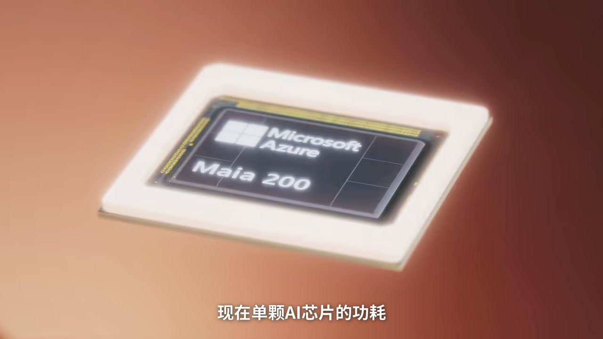

内容要点
约十个月前美国政府以约 89 亿、20.47 美元/股买入英特尔约 9.9% 股份。视频先拆逻辑芯片家族（CPU 时代 Wintel → 手机分工 Fabless/Foundry → 疫情芯片荒暴露亚洲先进制程集中），再讲基辛格（Pat Gelsinger）IDM 2.0 因客户信任与良率观望失败、ChatGPT 后 GPU 抢戏，随后 AI 进入 agent/系统底座阶段，CPU、先进封装与互连又回到英特尔老根据地。过去一年股价大幅反弹背后是国家资本、产业巨头、客户与新管理层「五路人马」共振。ASR 多为繁体/错词：CHIPS 法案（非 Trips）、ChatGPT、台积电张忠谋、SK 海力士等已按语境校正。
知识结构
CPU 王者→手机迫使分工→台积电信任型代工崛起。
CHIPS 补贴下英特尔唯一本土先进制造选项；客户怕「又开餐厅又帮炒菜」。
训练→部署切换后封装/CPU 缝隙打开；国家+巨头+客户+自救共振。
英特尔「被救」不只因为情怀，而是美国先进制造安全底线 + AI 系统化重新抬高 CPU/封装价值；商业上仍取决于良率、防火墙与客户是否真下单。
00:00-04:50从 Wintel 到 Fabless/Foundry
PC 时代算力中枢是 CPU，英特尔与微软组成 Wintel，利润池顶端；英伟达还在游戏卡、台积电拿着纯代工 PPT 敲门。iPhone 后手机要低功耗薄机身快迭代，聚光灯散到通信/ISP/电源等赛道，分工细化：Fabless 只设计、Foundry 只代工，台积电以「只做不学」赢得信任。


04:50-07:40芯片荒、CHIPS 与 IDM 2.0 折戟
2020 芯片荒让供应链脆弱显性化：美国有设计大脑，7nm 以下制造高度集中亚洲。2022 年 CHIPS 法案要重塑本土先进制程，能接的美国本土公司几乎只剩英特尔。基辛格喊 IDM 2.0——自造也帮全行业造——却撞上利益冲突与良率不达标：客户不愿交核心版图，流片失败代价远大于代工费差价。ChatGPT 爆发后 GPU 成主角，英特尔被边缘化、一度跌出道指，第一次「走出 ICU」失败。

07:40-14:46系统级 AI 与五路人马集体下注
当 AI 从训练大模型进入部署 agent，竞争变成系统底座：CPU 控制、先进封装、底层互连——英特尔老家地。供应链要安全底线，系统化又给商业缝隙，于是国家资本、产业巨头、生态背书、真实订单与新 CEO 推动代工独立防火墙、挖角先进封装人才同步加压。18A 等节点交出首张答卷，市场用股价回应「不能死」的集体押注；最终是真正复活还是续命，取决于执行而非叙事。



完整转录（271段）
以下文本由 Whisper 自动转录，可能存在识别误差；正文与导语已按语境校正专名与术语。
你來吧
大概十個月前
美國政府花了89億
用美股20.47美元的價格
買了英特爾9.9%的股份
而現在
如果我們回看整個芯片家族的迭代史
大致能摸出三次產業生態的大洗牌
聽完你就會知道
英偉達
台積電
英特爾
三星
海靈視這一堆二輸能相對公司
在等級森嚴的芯片家族中
到底處於什麼位置
三次洗牌
誰變成了香波波
誰又從主角變成了坎克
但在洗牌之前
咱們先花20秒拆個機箱
認識一下芯片家族的兩大核心派系
一派叫邏輯芯片
負責算
主板最中間的CPU是老大哥
PC時代
整台電腦的算力中數是CPU
而CPU的絕對王者就是英特爾
78 90後對電腦開機時那句
登登登登登
一定不陌生
它和微軟組成了大名鼎鼎的Wintel聯盟
微軟掌控軟件生態入口
英特爾壟斷硬件心臟
夾著手牽手
穩坐行業利潤力的頂端
那時候英偉達還在死客遊戲顯卡
台積電的張晝謀還在拿著純代工的PPT
敲門拜訪
AMD還在做千年老二
直到2007年
喬布斯
掏出了iPhone
邏輯芯片的底層規則
率先變天了
手機� aquela和PC芯片的商業訴求
完全不同
PC是叫大馬力
英特爾一家獨大
但手機咱們是揣在兜裡的
核心訴求是
不發燙
高續航
機身薄
一年一迭代
所以聚光燈瞬間轉移到了通信機帶
圖像處理
電源criptions這些細分賽道
那需求越雜
分工就必須越細
此時
當年被嘲笑的台積電就挺直了腰板
邏輯芯片的產業流程
至此分為兩個大環節
第一步是Fabulous純設計
高通蘋果
英語達
聯發科
他們只畫圖紙
不建廠
可以省下幾百億的資本開支
全部精力就死磕架構和軟件生態
第二步是方具純代工
接過圖紙埋頭幹活
絕無碰客戶設計
把這點做到極致的超級乙方
就是台積電
這個分工除了效率
還有一個好處
在於信任度
芯片圖紙就像是餐廳的保密菜單
核心配料
台積電這種超級乙方
就是做到了你地給我秘方
我保證我保證我保證只做不學
那插一
按理說
劇本寫到這裡
就該全劇中了
英特爾是不是還跟諾基亞科大一樣
進懷舊博物館了
可偏偏
決定一家芯片巨頭生死的
從來都不只有商業邏輯
還有背後的龐大
且極其脆弱的產業生態
2020的疫情
引發了全球芯片荒
汽車停產
kidneys 手機交替也被拉長
那全世界突然意識到一個問題
半導體的供應鏈
竟然是如此的脆弱
一顆芯片斷供
整條現代供應鏈都能跟著癱瘓
緊接著
這份對供應鏈安全的焦慮
被徹底放大
在20010年洗完牌後
儘管美國擁有英偉達
蘋果
高通這些最聰明的大腦
但全球最先進的7奈米以下的
製造產能高度集中在亞洲
2022年
美國落地了527美元的
Trips 法案
目標極其執拜
重塑本土的先進製程工業生態
那這會誰能接呢
台積電和三星雖然有外地工廠
但重心依然在亞洲
翻遍整個美國
又有自家工廠
又能做先進芯片製造的本土公司
只剩英特爾了
而此時
英特爾的技術老兵
帕特基辛格
也正式回歸救火
以上任
他就喊出了
IDM2.0戰略
英特爾不僅要自己造芯片
還要幫全行業造
就靠著這個願景
英特爾拿下的Trips法案
最大的補貼
第一次嘗試走出ICU
但造芯片不是畫PPT
良率要一個百分點
一個百分點的磨
工程師要一個團隊一個團隊養
那英特爾面臨最致命的問題
是客戶信任和利益衝突
英特爾自己就是芯片設計去投
現在去跟高通應為達說
你把最核心的版圖數據交給我
我幫你們造
那客戶心裡只有四個字
我要煙排
你既開餐廳
又說要幫我炒菜
我是不是得看看
E的後廚會不會偷菜譜
當然
另一個核心的因素
還是英特爾遲遲不達標的良率數據
在這個行業
先進節點的流偏
KBOT
光照組合和NRE費用
動輒是數千萬甚至上億美元
所以沒有客戶會為了省一點代工費
就承擔流偏失敗的巨大財務風險
所以
IDM2.0喊得很響
但客戶總是觀望的多
真下單的少
巨額資本開支砸下去
虧損像滾雪球一樣擴大
那無露偏鋒連夜雨
就在英特爾焦頭爛額的時候
外部又迎來了CHARGE GPT的爆發
GPU
黃仁勳和英偉達突然成了主角
同樣吸引
英特爾在這份AI光環的照耀下
徹底淪為配角
2014年
英特爾股價暴跌60%
也是在這一年被踢出了
帶了25年的道瓊斯指數
這一份殘留的成績單
直接讓基辛格黯然退休
英特爾第一次走出ISO的努力
也宣告失敗
但就在isance以為
他要徹底涼透的時候
2016年
產業風向鏢
再次極其詭異的翻了牌
AI開始從訓練大模型
進入了部署agent的全新階段
在這套新生態裡
AI競爭從單顆芯片之戰
變成了整個系統及底座之戰
而系統占理BB的CPU控制
先進封裝
底層互聯
恰恰是英特爾的老家地
所以你看
底層供應鏈需要安全底線
AI系統化眼鏡給了商業縫隙
既然英特爾不想死不能死
問題就變成了
誰來救怎麼救
就在這個歷史節點
一場用國家資本產業巨頭
技術生態同時參與的
超級搶救開始了
過去一年
英特爾的股價漲了7倍
這背後是五路人馬
基於不同的商業訴求
但卻恰好在同一時間的
集體下注
,現在也在壓住AI基礎設施
英特爾最重磅的
是在推特上爆出的
蘋果也要和英特爾合作代工了
為什麼說蘋果重磅呢
因為在2011年的時候
庫克曾經說過
英特爾只是不懂如何被找到
這直接給英特爾判了15年的死刑
還是投不過真相定律
而這也完成了資本市場
最愛的閉環驗證
最後一路是英特爾自己
成立五周月主帥重構組織
接替基辛格的新CEO
成立了一個
成立五雷利風行
把英特爾的代工部門
加速獨立化
建立防火牆
努力的告訴客戶
我們就炒菜
絕不看菜譜
以打消客戶的疑慮
同時他們還挖來了
前SK海力士的CEO李希西
死磕先進封裝和後端製造
所以你總結一下
咱們看這五路人馬
政� pipeline
資本給了生態
巨頭給了生態背書
客戶給了真金白銀
英特爾自己也在展示覺醒
這陣仗在半導體商業史上
絕無僅有
那目前呢英特爾交出了18a制成的第一張打卷命是許
英特爾的生態
是否能夠讓他在這場難捨難分的新戰場
能不能給自己拼出一條生路
所以屏幕前的你覺得
英特爾這波到底是
A. 真正復活
幻徒重開
還是B. 政府續命
SU續費呢
請在評論區告訴我你的答案
好 這是小李商海城湖系列的第16篇視頻
喜歡本期視頻的話
記得點贊評論收藏
你還想提哪家公司
請在評論區的彈幕點菜吧
我們下期不見不散
拜拜